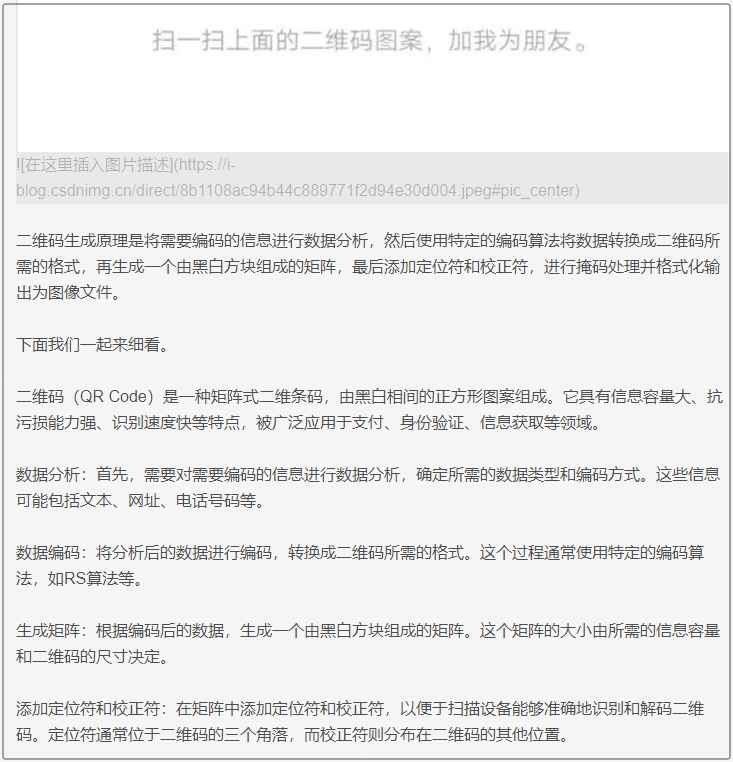
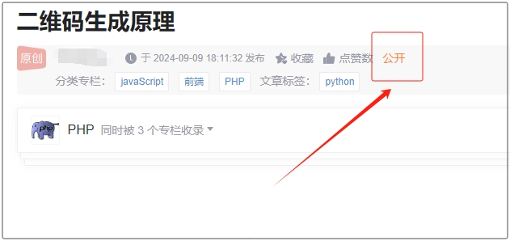
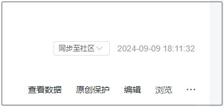

如何获取CSDN博客链接？
1. 点击链接 https://mp.csdn.net/mp_blog/manage/article 登录后开通CSDN博客，如果还没有账号请注册账号，建议使用微信扫码注册。
2. 点左上角发布文章。

3. 编写一篇文章，例如【二维码的生成原理】，然后插入你的二维码图片。
4. 接着在下面继续写文章，自己网上找文章的内容就行，写多点，最好就是1000字左右，这样系统就不会默认将你的文章加入到人工审核的队列中了，如果文字太少，系统会将你文章加入人工审核，到时候就会告知你审核不通过，因为有二维码。

发布文章之后，查看文章，看下是不是公开状态。

5. 确定是公开状态，点击这里 https://mp.csdn.net/mp_blog/manage/article 回到创作中心。点击浏览，跳转后，复制这篇文章的链接，这个链接就是CSDN博客链接。

复制出来的文章链接格式参考：
https://blog.csdn.net/likeyunkeji/article/details/142069708